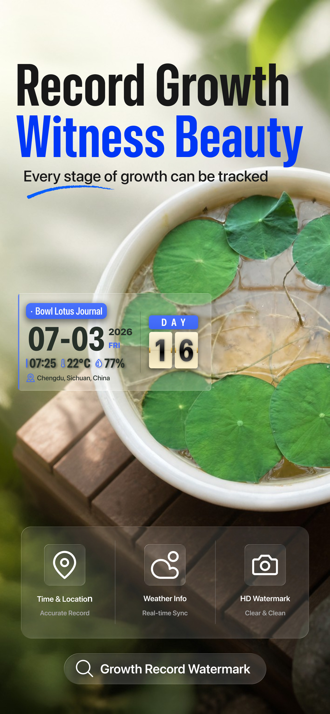

怎么在 iPhone 照片上显示「第 N 天」？
在天天水印相机选择一个日期作为 Day 1。之后用 App 拍新照片，水印会显示拍摄当天是第几天。
把哪一天设为 Day 1？
- 在 iPhone 打开天天水印相机，选择支持天数水印的模板。iOS 1.8.1 的模板列表中叫「植物生长日记」。
- 点击取景画面中的水印进入模板设置，把开始记录的日期设为 Day 1。
- 在取景画面确认天数，按需填写备注，再拍照。下次拍同一件事时，继续使用原来的起始日期。
天数怎么计算？
把 3 月 1 日设为 Day 1，3 月 7 日拍照时就显示第 7 天。中间可以隔几天再拍，天数仍按起始日期往后算。
水印会在 App 内拍摄新照片时加上。如果刚记录完另一个项目，拍摄前再看一眼预览，确认起始日期和天数。

不同场景从哪一天开始算？
- 植物观察。从播种当天开始，照片能留下第一次看到幼芽时的天数。
- 健身记录。从训练计划开始当天算起，每隔一段时间拍一张同机位照片。
- 宝宝百日照。把出生当天设为 Day 1，拍照前在取景画面确认是否显示第 100 天。